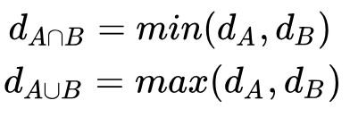
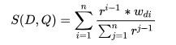

Oleh : Alvin Limassa 13516039 Jeffry 13516156
Information Retrieval (Temu Balik Informasi)
Temu balik informasi (information retrieval) adalah ilmu yang mempelajari tentang proses dan metode dalam pencarian dan pengambilan informasi yang dibutuhkan oleh pengguna (query) dari koleksi berbagai dokumen. Contoh temu balik informasi yakni berupa pencarian suatu informasi tertentu dari suatu dokumen, pencarian suatu dokumen tertentu, pencarian metadata yang menjelaskan data lain, maupun database yang berisi teks, gambar, maupun suara.
Temu balik informasi memiliki beberapa peran bagi pengguna yakni:
Secara prinsip, temu balik informasi adalah suatu proses yang sederhana. Misalkan terdapat sumber informasi berupa kumpulan dokumen, dan suatu pertanyaan pengguna (query). Untuk memperoleh informasi yang diperlukan pengguna, dapat dilakukan dengan membaca semua dokumen yang ada, lalu menyimpan dokumen yang relevan dan mengesampingkan dokumen lainnya. Proses ini disebut perfect retrieval. Namun, proses ini tidaklah praktis sebab bila sumber informasi yang ada berjumlah banyak, maka pengguna akan menghabiskan banyak waktu untuk membaca semua dokumen yang tersedia. Oleh karena itu, maka dibuatlah berbagai model representasi sumber informasi agar dapat melakukan pengambilan informasi yang lebih efektif. Berbagai model tersebut antara lain :
Perhitungan Bobot dengan TF-IDF
Dalam beberapa model temu balik informasi, pengambilan suatu informasi dari suatu dokumen akan melibatkan perhitungan bobot suatu term (bisa dalam bentuk kata, frasa, maupun unit hasil indexing). Salah satu cara perhitungan bobot term yakni dengan menggunakan TF-IDF. TF-IDF merupakan singkatan dari Term Frequency - Inverse Document Frequency.
TF (Term Frequency) adalah nilai yang merepresentasikan frekuensi dari kemunculan term yang bersangkutan dalam suatu dokumen. Karena itu, semakin banyak kemunculan suatu term pada suatu dokumen, maka akan berdampak semakin tinggi nilai TF dari dokumen tersebut. Untuk menghitung TF, dapat digunakan beberapa rumus, antara lain:
IDF (Inverse Document Frequency) adalah nilai yang mencerminkan bagaimana suatu term didistribusikan secara luas pada koleksi dokumen yang ada. Semakin sedikit jumlah dokumen yang mengandung term yang bersangkutan, maka nilai IDF akan semakin besar. Jadi, rumus untuk menghitung IDF adalah log(D/fd), dimana D adalah jumlah dokumen dalam suatu koleksi, dan fd adalah jumlah dokumen yang mengandung suatu term.
Logika Fuzzy dan Fuzzy Set Theory
Logika fuzzy adalah logika yang memiliki nilai kebenaran di antara 2 nilai kebenaran tradisional, true dan false. Logika ini dibuat agar dapat mencakup kondisi dimana suatu nilai kebenaran bukanlah termasuk ke dalam true maupun false. Contoh cukup keras, dan sedikit dingin.
Berbeda dengan teori himpunan biasa, dimana suatu elemen dinyatakan terdapat dalam himpunan atau tidak, fuzzy set theory (teori himpunan fuzzy) memungkinkan derajat keanggotaan untuk suatu elemen dalam himpunan, sehingga memungkinkan peralihan keanggotaan yang lebih bertahap dibandingkan teori himpunan biasa.
Temu Balik Informasi dengan Metode Fuzzy
Salah satu jenis model set-theoritic yakni temu balik informasi yang menggunakan logika fuzzy. Metode Fuzzy adalah suatu metode yang merupakan pengembangan dari model boolean dan fuzzy set theory. Metode Fuzzy sendiri dapat dibagi menjadi dua metode klasik yaitu Mixed Min and Max (MMM) dan Paice Model. Kedua metode ini tidak dapat menghitung jumlah query yang digunakan akan tetapi alogritma ini masih termasuk ke dalam bagian algoritma P.
Pada pemodelan Mixed Min and Max (MMM), sebuah elemen dapat memiliki tingkat keanggotaan yang bervariasi (asumsikan dA memetakan keanggotaan ke A), jumlah dokumen yang berhubungan dengan istilah pada indeks A dianggap sebagai tingkat keanggotaan dokumen dalam himpunan fuzzy yang terkait dengan A. Tingkat keanggotaan dapat diperoleh dengan menggunakan rumus berikut : 
Berdasarkan contoh di atas, dokumen yang akan diambil untuk suatu query yang berbentuk A atau B harus memiliki asosiasi himpunan fuzzy dengan bentuk A gabungan B. Hal yang sama dilakukan untuk query dengan bentuk A dan B harus memiliki himpunan fuzzy dengan bentuk A irisan dengan B. Memanfaatkan kedua data tersebut, dimungkinkan untuk menentukan kemiripan suatu dokumen dengan dokumen yang lain menjadi min(dA,dB) atau max(dA,dB). Pemodelan jenis MMM mencoba untuk membandingkan kedua dokumen menggunakan operator boolean dengan mempertimbangkan kesamaan dokumen menjadi kombinasi linear dan nilai maks dan min yang dihasilkan.
Untuk memahami lebih lanjut tentang penggunakan nilai maks dan min, diberikan contoh sebagai berikut. Diberikan suatu dokumen D dengan bobot indeks dA1,dA2,dA3,...,dAn untuk persyaratan A1,A2,A3,...,An memiliki query Qor= (A1 or A2 or A3 or … or An ) dan Qand= (A1 and A2 and A3 and … and An ). Pada pemodelan MMM query dokumen tersebut dimodelkan menjadi SlM(Qor, D) = Cor1 * max(dA1, dA2, ..., dAn) + Cor2 * min(dA1, dA2, ..., dAn) SlM(Qand, D) = Cand1 * min(dA1, dA2, ..., dAn) + Cand2 * max(dA1, dA2, ..., dAn) dimana Cor1 dan Cor2 merupakan nilai koefisien yang lebih lembut (persyaratan yang lebih tidak ketat), untuk memaksimalkan hasil query yang didapatkan maka pada umumnya akan memiliki nilai Cor1 > Cor2 dan Cand1 > Cand2 yang dapat disederhanakan menjadi Cor1 = 1 - Cor2 dan Cand1 = 1 - Cand2. Hasil percobaan membuktikan bahwa performansi optimal Cand1 akan muncul pada rentang 0,5 - 0,8 dan Cor1 >0,2. Secara umum metode MMM memiliki biaya komputasi yang rendah dan tingkat temu balik informasi yang jauh lebih baik dari model boolean standar.
Model Paice merupakan model yang mirip dengan model MMM, namun selain mempertimbangkan tingkat keanggotaan, model Paice juga mempertimbangkan bobot dari semua term dalam suatu dokumen dalam menentukan kemiripan suatu dokumen. Rumus untuk menghitung kemiripan suatu dokumen pada model Paice dapat ditulis sebagai berikut.  dimana D merupakan hasil TF-IDF dari dokumen tersebut, Q merupakan query, n merupakan banyaknya query yang diberikan, r merupakan konstanta, dan wdi merupakan bobot term ke-i dari dokumen. Ketika n=2, model Paice akan mirip dengan model MMM. Untuk query “dan”, r yang cocok sebesar 1,0 , sedangkan untuk query “atau”, r yang cocok sebesar 0,7.
Pembagian Tugas Alvin Limassa : Mencari sumber informasi, melengkapi artikel, membuat GitHub Jeffry : Merangkum sumber informasi, merapikan artikel
Referensi